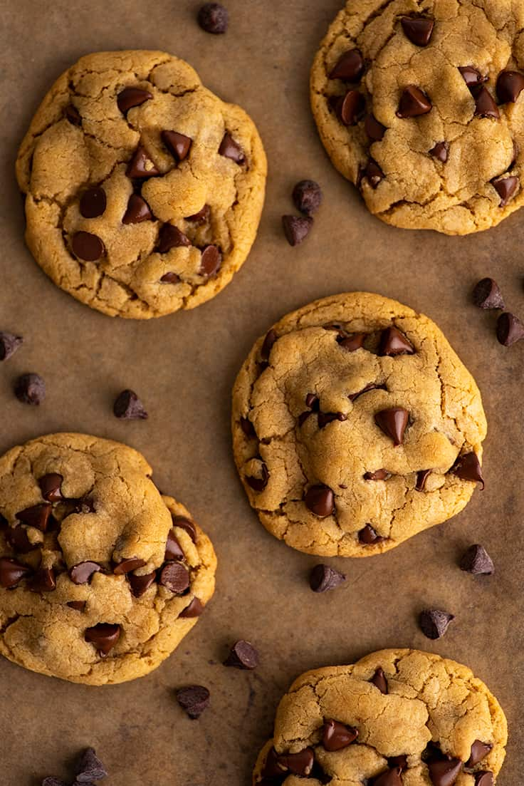

Chocolate chip cookie recipe

The best chocolate chip cookies
This recipe pertaining to chocolate chip cookies is one of the best because of how the cookies turn out.
You can add as much chocolate chips as you want, but in order for the cookies to be soft you have to limit each cookie to small amounts of around 4 to 5 chocolate chips.
Ingredients
- 2 cups all-purpose flour
- 1/2 teaspoon baking soda
- 1/2 teaspoon salt
- 3/4 cup unsalted butter,melted
- 1 cup packed brown sugar
- 1/2 cup of white sugar
- 1 tablespoon vanilla extract
- 1 egg
- 1 egg yolk
- 2 cups semisweet chocolate chips
Directions/Steps to make the cookies!
- Preheat the over to 325 degrees F (165 degrees C). Grease cookie sheets or line with parchment paper.
- Sift together the flour, baking soda and salt; set aside.
- In a medium bowl, cream together the melted butter, brown sugar and white sugar until well blended. Beat in the vanilla, egg and egg yolk until light and creamy. Mix in the sifted ingredients until just blended. Stir in the chocolate chips by hand using a wooden spoon. Drop cookie dough 1/4 cup at a time onto the prepared cookie sheets. Cookies should be about 3 inches apart.
- Bake for 15 to 17 minutes in the preheated oven, or until the edges are lightly toasted. Cool on baking sheets for a few minutes before transferring to wire racks to cool completely.